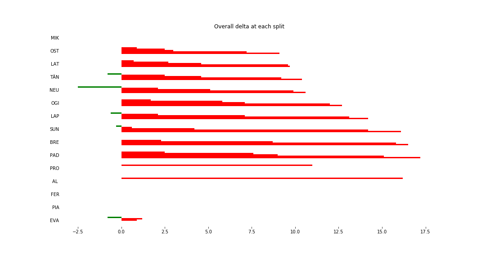
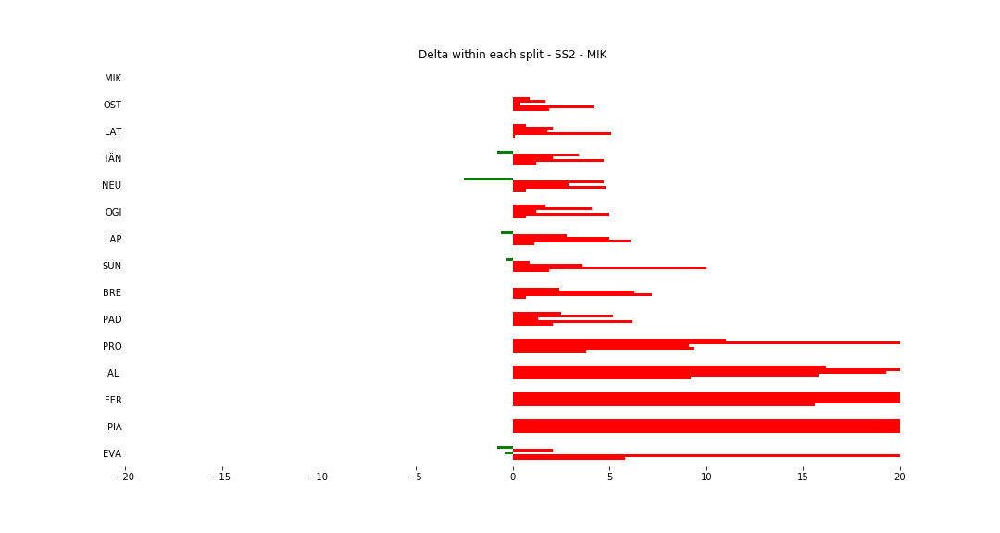

Stage Map - Italy, 2018 - SS2

Stage Overall Split Delta Chart - Italy, 2018 - MIK - SS2

Stage Within Split Delta Chart - Italy, 2018 - MIK - SS2

Stage Progress Chart - Italy, 2018 - MIK - SS2

| Driver | Team | Elapsed Duration | Position | Class Rank | diffFirst | diffPrev |
|---|---|---|---|---|---|---|
| MIK | HYUNDAI SHELL MOBIS WRT | 00:18:28.1000000 | 1 | 1 | 00:00:00 | 00:00:00 |
| OST | CITROEN TOTAL ABU DHABI WRT | 00:18:37.2000000 | 2 | 2 | 00:00:09.1000000 | 00:00:09.1000000 |
| LAT | TOYOTA GAZOO RACING WRT | 00:18:37.8000000 | 3 | 3 | 00:00:09.7000000 | 00:00:00.6000000 |
| TÄN | TOYOTA GAZOO RACING WRT | 00:18:38.5000000 | 4 | 4 | 00:00:10.4000000 | 00:00:00.7000000 |
| NEU | HYUNDAI SHELL MOBIS WRT | 00:18:38.7000000 | 5 | 5 | 00:00:10.6000000 | 00:00:00.2000000 |
| OGI | M-SPORT FORD WORLD RALLY TEAM | 00:18:40.8000000 | 6 | 6 | 00:00:12.7000000 | 00:00:02.1000000 |
| LAP | TOYOTA GAZOO RACING WRT | 00:18:42.3000000 | 7 | 7 | 00:00:14.2000000 | 00:00:01.5000000 |
| SUN | M-SPORT FORD WORLD RALLY TEAM | 00:18:44.2000000 | 8 | 8 | 00:00:16.1000000 | 00:00:01.9000000 |
| BRE | CITROEN TOTAL ABU DHABI WRT | 00:18:44.6000000 | 9 | 9 | 00:00:16.5000000 | 00:00:00.4000000 |
| PAD | HYUNDAI SHELL MOBIS WRT | 00:18:45.3000000 | 10 | 10 | 00:00:17.2000000 | 00:00:00.7000000 |
| PRO | MP-SPORTS | 00:19:22.2000000 | 16 | 11 | 00:00:54.1000000 | 00:00:03.6000000 |
| AL | YAZEED RACING | 00:19:49.3000000 | 23 | 12 | 00:01:21.2000000 | 00:00:14.2000000 |
| FER | CYRILLE FERAUD | 00:21:10.2000000 | 29 | 13 | 00:02:42.1000000 | 00:00:03.6000000 |
| PIA | PIANO | 00:22:15.2000000 | 34 | 14 | 00:03:47.1000000 | 00:00:14.5000000 |
| EVA | M-SPORT FORD WORLD RALLY TEAM | 00:31:39 | 45 | 15 | 00:13:10.9000000 | 00:00:00.5000000 |